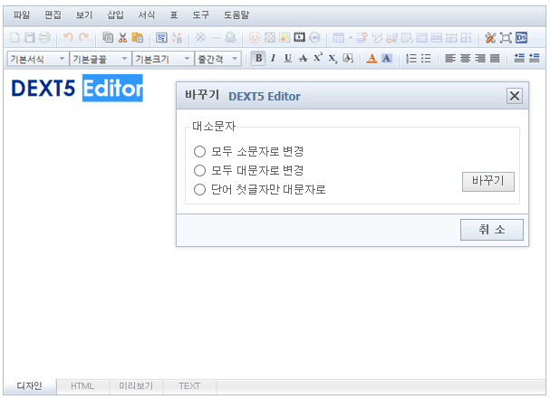
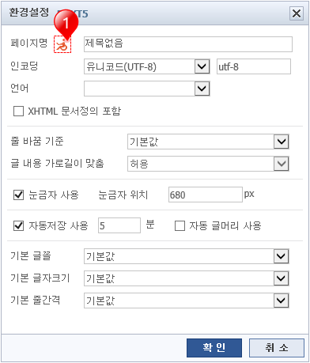

Editor내에 불필요한 중복 태그가 존재할 경우
브라우저 성능에 영향을 미치므로
중복된 태그가 있을 시 제거합니다.
Editor내의 영문의 대소문자를 변경합니다.

01변경할 텍스트를 블럭 지정 후 도구 > 대/소문자 바꾸기를 실행합니다.
02변경할 옵션을 선택 후 바꾸기를 클릭하면 대/소문자가 변경됩니다.
html의 기본 사항을 설정할 수 있습니다.

01①번 버튼을 클릭하면 html title에 관한 웹접근성 설명이 나옵니다.
내용을 보고 적절한 title을 입력하면 됩니다.
02줄 바꿈 기준 및 그 내용의 가로길이를 맞출 수 있습니다.
03눈금자 사용 유무와 눈금자의 위치를 px 단위로 지정할 수 있습니다.
04자동저장 사용을 분 단위로 지정 할 수 있습니다.
05에디터의 기본 글꼴 및 글자크기, 줄간격을 지정할 수 있습니다.